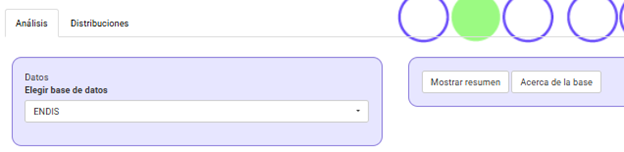
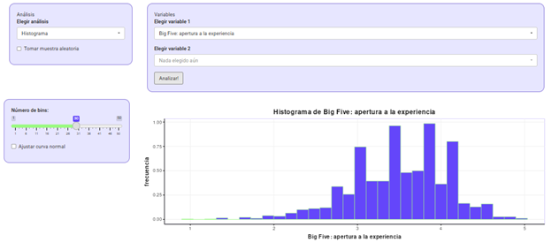
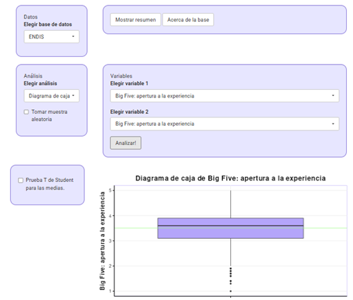

Práctico: Describir los datos
Primeros pasos: conocer (y amigarme con) los datos
Lectura asociada
Capítulo 2. ¿Por qué estadística? Capítulo 1. El rol de las variables
Contenidos
- Inspección visual de una base de datos. Identificar variables y su tratamiento.
- Visualización de datos: histograma
- Visualización de datos: boxplot
- Medidas de tendencia central: moda, media y mediana
- Medidas de dispersión: rango, desvío y varianza
- El rol de las variables en el diseño
Panel de datos
Accede a: cuanti.psico.edu.uy/panel Localiza la base de datos ENDIS. Vamos a explorarla.
Contextualizar los datos
Antes de empezar a trabajar con los datos, necesitamos un poco de contexto. Activa el botón “Acerca de la base” para conocer de qué se trata.
¿Qué variables contiene la base? ¿Qué tipo de variables son (o cómo fueron tratadas)?
Lee el apartado Escalas de medición del libro.
Activa el botón “Mostrar resumen”. Identifica variables y niveles de las variables. ¿Cuántas variables contiene? ¿Qué se evalúa? ¿Cómo lo evaluaron?

- Identifica cómo ha sido tratada cada variable e intenta clasificarlas
- Registra tu clasificación. Compara tu registro en tu subgrupo
¡Miremos los datos!
Seleccioná la base de datos ENDIS
¿Necesitás ayuda?
Elegir análisis > Ver datos
Mmm… mejor examinemos los datos en un formato visual. Como vimos en el libro, vamos a convertir esos números a otras formas de visualización de datos.
- El primer resumen oficial: realiza el histograma de una variable.
¿Necesitás ayuda?
Elegir análisis > Histograma > Elegir variable 1 (numérica) Por ejemplo, la variable Big Five: Apertura a la experiencia (una variable de personalidad del adulto)

Cambia el ancho de los intervalos (bins) y observa cómo cambia el gráfico.
¿Qué ancho de bin seleccionarías finalmente?
Repite el procedimiento para otras variables
Describe con tus palabras qué representa cada barra de un histograma y qué información nos da esta forma de visualización
¿Cómo es la forma del histograma en cada variable? (ej. simetría, “picos”)
Ahora explora la opción gráfica Diagrama de cajas (Boxplot) para la misma variable. ¿Qué información te ofrece este gráfico? Estima qué valores corresponden al percentil 25, 50 y 75. ¿Qué indica la línea verde?
¿Necesitás ayuda?

De muchos números a uno: tendencia central y dispersión
En el libro y en el ejercicio anterior vimos que podemos hacernos una idea de los datos al representarlos mediante gráficos. Ahora vamos a examinar la tendencia central y la dispersión de los datos a través de números.
Instrucciones:
Obtené la tabla de estadísticos descriptivos.
¿Por qué para algunas variables no se ofrece el valor de la media y otros estadísticos?
¿Qué estadísticos expresan la tendencia central en los datos? ¿Y la dispersión?
Localiza los valores de tendencia central y dispersión para una variable.
Recupera el histograma del ejercicio anterior para esa variable. Si dibujaras líneas verticales para marcar la Media, Moda y Mediana. ¿Coinciden los tres valores? ¿Cuál es más sensible a los valores extremos? ¿Por qué?
El rol de las variables
Ejercicio: Efectividad de una intervención terapéutica
- Lee el apartado El rol de las variables: predictoras y dependientes del Capítulo 1 del libro.
Un equipo de investigación está evaluando la efectividad de la terapia EMDR (Desensibilización y Reprocesamiento por los Movimientos Oculares) para tratar la ansiedad generalizada. Diseñan un estudio en el que reclutan a 60 personas con diagnóstico de trastorno de ansiedad generalizada. A la mitad de los participantes se les aplicaron 8 sesiones de EMDR, y a la otra mitad, 8 sesiones de terapia cognitivo-conductual (TCC), usada como comparación activa. Antes y después del tratamiento, los participantes completaron un cuestionario estandarizado de ansiedad (por ejemplo, el GAD-7). Además, les piden que califiquen su nivel de malestar percibido en situaciones sociales (de 0 a 10) y su calidad de sueño durante la última semana.
Identificá la/s variable/s predictora/s (independiente/s). ¿Qué manipula o controla el investigador?
Identificá la/s variable/s dependiente/s. ¿Qué se mide como resultado del experimento?
¿Qué otras variables podrían influir en los resultados si no se controlan?